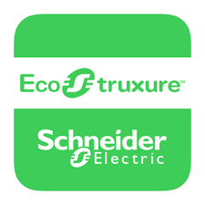
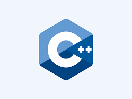
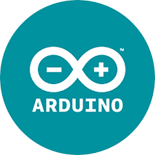
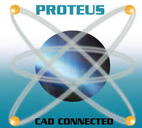

About Me
My name is Agung Puji Raharjo. I am currently pursuing a Master of Science degree in Robotics at the University of Manchester. My studies at Gadjah Mada University, with a major in Electronics and Instrumentation, have equipped me with the necessary skills and experiences to effectively navigate professional challenges. This portfolio showcases some of my preferred projects and the skills I've acquired.




